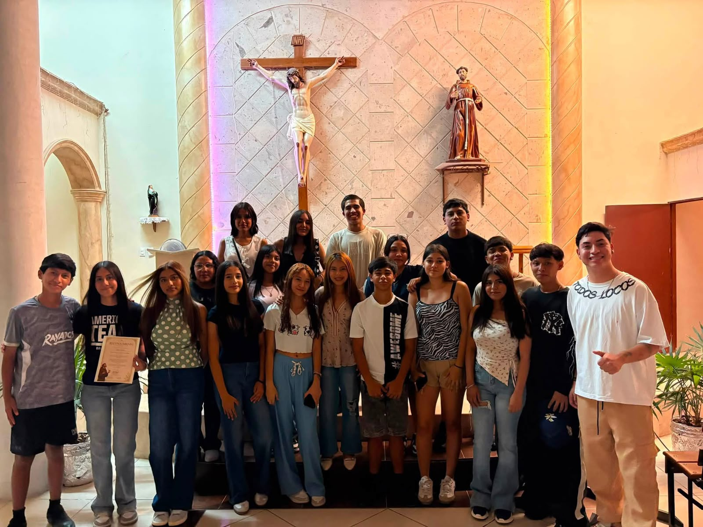

Nuestra historia
JEFRA es un grupo juvenil católico que busca compartir la fe y crear un lugar donde cada joven pueda acercarse a Dios.

Misión
Ayudar a los jóvenes a descubrir el amor de Dios, conocer a Jesús y buscarlo cada día.
Visión
Ser una comunidad unida, alegre y comprometida con el mensaje de Cristo.
Valores
Fe, fraternidad, respeto, humildad, servicio y amor al prójimo.